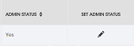

help home » set department administrator »
How To Set/Remove Department Administrator Role
Note: Only System Admin and Department Admin have permissions to change departments users' admin status.
- Click on the "Departments" button on the left side menu bar
- On "Departments" page, you should see a table of all current departments in system
- Find the department you want to modify using the "Filter entries" function by inputing relevant department code or name on the "Filter entries" box, or you could click on any sortable table column header to make your search easier.
- Click the users icon on the row you want to modify, this would bring you to the "Department Users" page which contains all department users in current department.
- To add admin role to the user, click on the Set Admin Status icon
 on the row you want to modify.
on the row you want to modify. - The user "Admin Status" column should change to "YES".

- To remove admin role to the user, click on the Set Admin Status icon on the row you want to modify.
- The user "Admin Status" column should change to empty.